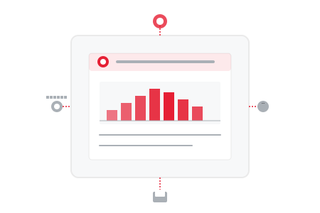

对话式分析
通过自然语言与数据交互，彻底革新您访问业务洞察的方式
智能业务助手
我们AI驱动的对话界面消除了对复杂查询语言或技术专业知识的需求。只需用简单语言提问，即可获得即时洞察。
- 带有上下文理解的自然语言查询处理
- 支持后续问题和澄清的多轮对话
- 基于用户角色和历史的个性化推荐
- 业务专用术语识别和自定义词汇表
- 后台自动 SQL 生成和优化

团队专属 AI 助手
为不同部门和业务职能创建定制化 AI 助手。每个助手都预先配置了相关数据源和领域知识。
- 基于角色的助手（销售、市场、财务、运营）
- 基于行业最佳实践的引导式分析
- 定时洞察和个性化数据推送
- 与消息平台的无缝集成
- 用于捕获业务上下文的知识管理
